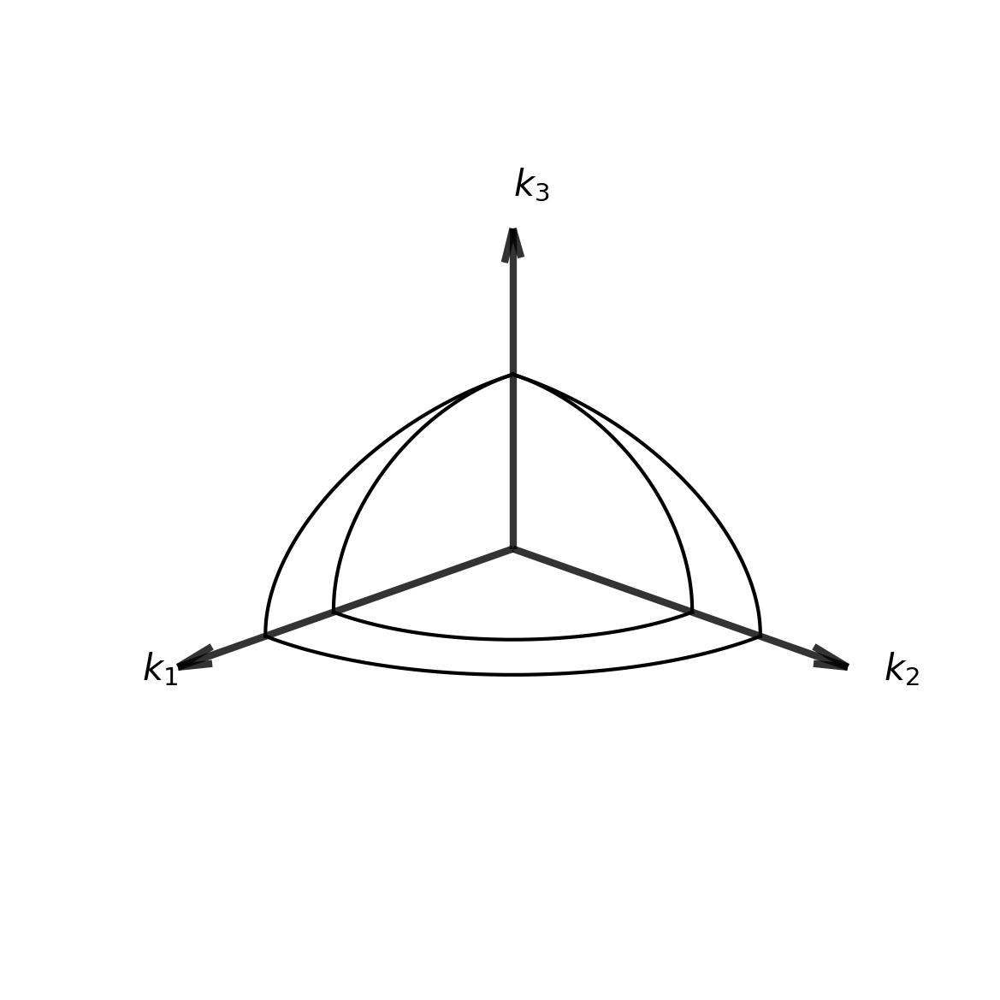
Light Propagation in Anisotropic Materials
Introduction to Anisotropic Materials
Anisotropic materials exhibit direction-dependent optical properties due to their underlying atomic and molecular structure. This directional dependence arises from several fundamental physical mechanisms:
1. Crystal Structure and Atomic Arrangement In anisotropic crystals, atoms are arranged in ordered, non-cubic lattices where the spacing and coordination between atoms varies with direction. For example, in calcite (CaCO₃), the carbonate groups are oriented in planes, creating different electron densities and polarizabilities along different crystallographic axes. This structural asymmetry directly translates to different optical responses for light polarized in different directions.
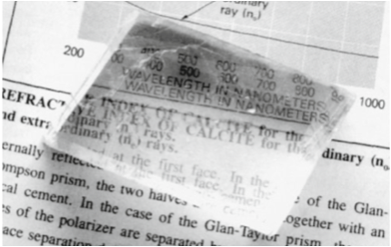
2. Chemical Bonding Asymmetry The strength and character of chemical bonds often vary with direction. In layered materials like mica, strong covalent bonds exist within planes while weaker van der Waals forces act between planes. This creates dramatically different electronic responses to electric fields applied parallel versus perpendicular to the layers, resulting in different refractive indices along different axes.
3. Electronic Structure Anisotropy Electron orbitals and charge distributions in anisotropic materials are inherently directional. The polarizability tensor—which describes how easily electrons can be displaced by an applied electric field—becomes direction-dependent. When light (an oscillating electromagnetic field) interacts with these anisotropic electron distributions, the material’s response depends on the relative orientation between the light’s electric field and the material’s electronic structure.
4. Symmetry Breaking Unlike isotropic materials that possess spherical symmetry, anisotropic materials have lower symmetry. This symmetry breaking means that the material’s properties cannot be described by a single scalar value but require a tensor description. The permittivity tensor \(\overleftrightarrow{\varepsilon}_r\) captures how the material’s response varies with direction.
5. Molecular Orientation Effects In liquid crystals and polymers, elongated molecules have preferred orientations that create macroscopic anisotropy. Even though individual molecules may be randomly positioned, their collective alignment creates direction-dependent optical properties. This is why liquid crystal displays can control light propagation by electrically altering molecular orientations.
Macroscopic Consequence: These microscopic asymmetries manifest as the permittivity tensor relationship \(\mathbf{D} = \varepsilon_0 \overleftrightarrow{\varepsilon}_r \mathbf{E}\), where the displacement field D and electric field E are no longer parallel. This non-parallelism is the mathematical signature of anisotropy and leads to all the remarkable optical phenomena we observe: birefringence, walk-off, polarization-dependent propagation, and the splitting of light into ordinary and extraordinary rays.
In contrast, isotropic materials like glass or cubic crystals have the same atomic environment in all directions, resulting in a scalar permittivity and parallel D and E fields.
Common Anisotropic Materials
Table 1.1 provides a comprehensive overview of well-known anisotropic materials, their optical classifications, and key refractive index values.
| Material | Type | Classification | \(n_x\) | \(n_y\) | \(n_z\) | Crystal System | Notes |
|---|---|---|---|---|---|---|---|
| Calcite (CaCO₃) | Uniaxial | Negative | 1.486 | 1.486 | 1.658 | Trigonal | \(n_e < n_o\), strong birefringence |
| Quartz (SiO₂) | Uniaxial | Positive | 1.544 | 1.544 | 1.553 | Trigonal | \(n_e > n_o\), optically active |
| Ice (H₂O) | Uniaxial | Positive | 1.306 | 1.306 | 1.307 | Hexagonal | Small birefringence |
| Rutile (TiO₂) | Uniaxial | Positive | 2.616 | 2.616 | 2.903 | Tetragonal | Very high indices |
| Sapphire (Al₂O₃) | Uniaxial | Negative | 1.768 | 1.768 | 1.760 | Trigonal | \(n_e < n_o\) |
| Topaz (Al₂SiO₄(F,OH)₂) | Biaxial | Positive | 1.606 | 1.609 | 1.616 | Orthorhombic | Small optic angle |
| Mica (KAl₂(Si₃Al)O₁₀(OH,F)₂) | Biaxial | Negative | 1.552 | 1.582 | 1.588 | Monoclinic | Large optic angle |
| Gypsum (CaSO₄·2H₂O) | Biaxial | Positive | 1.520 | 1.523 | 1.530 | Monoclinic | Small birefringence |
| Aragonite (CaCO₃) | Biaxial | Negative | 1.530 | 1.680 | 1.685 | Orthorhombic | Polymorph of calcite |
| Olivine ((Mg,Fe)₂SiO₄) | Biaxial | Positive | 1.635 | 1.651 | 1.669 | Orthorhombic | Common in geology |
| 5CB (4-Cyano-4’-pentylbiphenyl) | Uniaxial | Positive | 1.525 | 1.525 | 1.717 | Nematic LC | \(\Delta n = 0.192\) at 589 nm |
| E7 (Mixture) | Uniaxial | Positive | 1.521 | 1.521 | 1.746 | Nematic LC | \(\Delta n = 0.225\) at 589 nm |
| MBBA (N-(4-Methoxybenzylidene)-4-butylaniline) | Uniaxial | Positive | 1.515 | 1.515 | 1.758 | Nematic LC | \(\Delta n = 0.243\) at 589 nm |
Normal Polarization Modes and Crystal Types
Normal Polarization Modes (or eigenmodes) are the specific polarization states that can propagate through an anisotropic medium without changing their polarization character. For each propagation direction in a crystal:
- Only two independent polarization states can propagate as plane waves
- These modes have orthogonal polarizations
- Each mode experiences a different refractive index
- The modes propagate with different phase velocities
- The normal modes generally correspond to the “ordinary” and “extraordinary” rays
Uniaxial and Biaxial Crystals:
Uniaxial crystals have two of their three principal refractive indices equal: \(n_x = n_y = n_o\) (ordinary index), while \(n_z = n_e\) (extraordinary index). They have a single optical axis (the z-axis in this case). Light traveling along this optical axis experiences no birefringence. Examples include calcite, quartz, and rutile.
Biaxial crystals have three distinct principal refractive indices: \(n_x \neq n_y \neq n_z\). They have two optical axes along which light propagates without birefringence. The optical axes lie in the plane containing the highest and lowest refractive indices. Examples include mica, topaz, and gypsum.
The classification determines how light propagates through the material and the symmetry of the wave surfaces.
Mathematical Framework
Permittivity Tensor
In anisotropic materials, the electric displacement field D and electric field E are related through the permittivity tensor:
\[\mathbf{D} = \varepsilon_0 \overleftrightarrow{\varepsilon}_r \mathbf{E}\]
Where \(\overleftrightarrow{\varepsilon}_r\) is the relative permittivity tensor:
\[\overleftrightarrow{\varepsilon}_r = \begin{pmatrix} \varepsilon_{xx} & \varepsilon_{xy} & \varepsilon_{xz} \\ \varepsilon_{yx} & \varepsilon_{yy} & \varepsilon_{yz} \\ \varepsilon_{zx} & \varepsilon_{zy} & \varepsilon_{zz} \end{pmatrix}\]
Crucial Difference from Isotropic Media: Unlike in vacuum or isotropic materials where \(\mathbf{D} = \varepsilon_0 \varepsilon_r \mathbf{E}\) (parallel vectors), the tensor relationship means that D and E are generally not parallel. This fundamental departure has profound consequences for wave propagation.
Electric Field and Displacement Field
In component form, the tensor relationship gives: \[D_x = \varepsilon_0(\varepsilon_{xx}E_x + \varepsilon_{xy}E_y + \varepsilon_{xz}E_z)\] \[D_y = \varepsilon_0(\varepsilon_{yx}E_x + \varepsilon_{yy}E_y + \varepsilon_{yz}E_z)\] \[D_z = \varepsilon_0(\varepsilon_{zx}E_x + \varepsilon_{zy}E_y + \varepsilon_{zz}E_z)\]
Even when E points in a single direction, D will generally have components in all three directions due to the off-diagonal tensor elements, breaking the parallelism that exists in isotropic media.
Principal Axes and Dielectric Constants
For a lossless, non-magnetic anisotropic medium, the permittivity tensor can be diagonalized in its principal axes:
\[\overleftrightarrow{\varepsilon}_r = \begin{pmatrix} n_x^2 & 0 & 0 \\ 0 & n_y^2 & 0 \\ 0 & 0 & n_z^2 \end{pmatrix}\]
Where \(n_x\), \(n_y\), and \(n_z\) are the principal refractive indices.
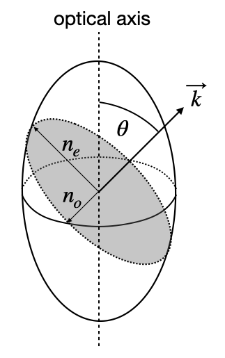
Even in principal axes: The non-parallelism persists unless the wave propagates along a principal axis and is polarized along another principal axis. For general propagation directions, D and E remain non-parallel, leading to the extraordinary ray phenomenon.
Wave Equation in Anisotropic Media
Starting from Maxwell’s equations, we need to carefully derive the wave equation in anisotropic media to understand the profound consequences of the tensor relationship between D and E.
From Maxwell’s equations: \[\nabla \times \mathbf{E} = -\frac{\partial \mathbf{B}}{\partial t}\] \[\nabla \times \mathbf{H} = \frac{\partial \mathbf{D}}{\partial t}\] \[\nabla \cdot \mathbf{D} = 0\] \[\nabla \cdot \mathbf{B} = 0\]
Taking the curl of the first equation and using \(\mathbf{B} = \mu_0 \mathbf{H}\): \[\nabla \times (\nabla \times \mathbf{E}) = -\mu_0 \frac{\partial}{\partial t}(\nabla \times \mathbf{H}) = -\mu_0 \frac{\partial^2 \mathbf{D}}{\partial t^2}\]
Using the vector identity \(\nabla \times (\nabla \times \mathbf{E}) = \nabla(\nabla \cdot \mathbf{E}) - \nabla^2 \mathbf{E}\):
\[\nabla^2 \mathbf{E} - \nabla(\nabla \cdot \mathbf{E}) = \mu_0 \frac{\partial^2 \mathbf{D}}{\partial t^2}\]
Critical Insight: In isotropic media where \(\mathbf{D} = \varepsilon_0 \varepsilon_r \mathbf{E}\), we have \(\mathbf{D} \parallel \mathbf{E}\). Since \(\nabla \cdot \mathbf{D} = 0\), this immediately implies \(\nabla \cdot \mathbf{E} = 0\), and the problematic term \(\nabla(\nabla \cdot \mathbf{E})\) vanishes, giving us the familiar wave equation.
In anisotropic media: The tensor relationship \(\mathbf{D} = \varepsilon_0 \overleftrightarrow{\varepsilon}_r \mathbf{E}\) means that \(\mathbf{D} \not\parallel \mathbf{E}\). Even though \(\nabla \cdot \mathbf{D} = 0\) (Maxwell’s equation), we cannot conclude that \(\nabla \cdot \mathbf{E} = 0\).
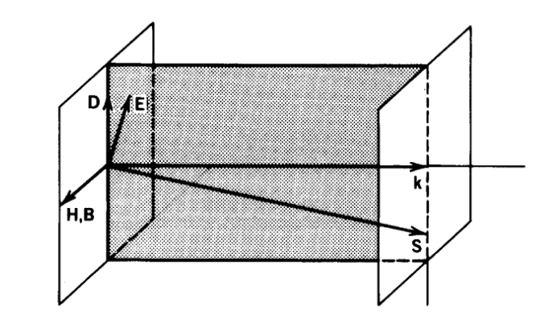
To see this explicitly, consider the divergence of E in terms of D: \[\nabla \cdot \mathbf{E} = \nabla \cdot (\overleftrightarrow{\varepsilon}_r^{-1} \mathbf{D}/\varepsilon_0)\]
Since the inverse permittivity tensor \(\overleftrightarrow{\varepsilon}_r^{-1}\) has spatially varying elements in general, even when \(\nabla \cdot \mathbf{D} = 0\), the divergence \(\nabla \cdot \mathbf{E}\) does not vanish.
The Impermeability Tensor
The inverse of the relative permittivity tensor \(\overleftrightarrow{\varepsilon}_r^{-1}\) is known as the impermeability tensor or dielectric impermeability tensor \(\overleftrightarrow{\eta}\):
\[\overleftrightarrow{\eta} = \overleftrightarrow{\varepsilon}_r^{-1}\]
This tensor plays a crucial role in crystal optics and provides an alternative mathematical framework for analyzing light propagation. In component form:
\[\eta_{ij} = (\varepsilon_r^{-1})_{ij}\]
Just like the permittivity tensor, the impermeability tensor has principal axes along which it becomes diagonal. In these principal axes:
\[\overleftrightarrow{\eta} = \begin{pmatrix} \frac{1}{n_x^2} & 0 & 0 \\ 0 & \frac{1}{n_y^2} & 0 \\ 0 & 0 & \frac{1}{n_z^2} \end{pmatrix}\]
The impermeability tensor is particularly useful because:
It relates directly to the optical indicatrix (index ellipsoid) equation: \[\eta_{11}x^2 + \eta_{22}y^2 + \eta_{33}z^2 + 2\eta_{12}xy + 2\eta_{13}xz + 2\eta_{23}yz = 1\]
In electro-optic materials, applied electric fields modify the impermeability tensor elements (rather than directly modifying the permittivity), making it the natural choice for describing electro-optic effects.
The principal values of \(\overleftrightarrow{\eta}\) are simply the inverse squares of the principal refractive indices, providing a direct connection to measurable optical properties.
In the analysis of wave propagation, the impermeability tensor offers equivalent but sometimes mathematically simpler formulations for understanding the behavior of light in anisotropic media.
Physical Consequences
Waves are no longer purely transverse: The non-zero \(\nabla \cdot \mathbf{E}\) means the electric field has components both perpendicular and parallel to the propagation direction.
Two propagation modes emerge: The modified wave equation, combined with boundary conditions, yields the Fresnel equation - a quartic equation in the refractive index that has two distinct solutions for each propagation direction, corresponding to the ordinary and extraordinary rays.
Polarization-dependent propagation: Each mode has a specific polarization state that depends on both the propagation direction and the crystal’s optical properties.
Wave Vector vs. Ray Vector Distinction: In anisotropic media, we must distinguish between:
- Wave vector \(\mathbf{k}\): Direction of phase propagation (perpendicular to wavefronts)
- Ray vector \(\mathbf{k}_r\) (or Poynting vector \(\mathbf{S}\)): Direction of energy flow
While in isotropic media \(\mathbf{k} \parallel \mathbf{S}\) (phase and energy travel together), in anisotropic media \(\mathbf{k} \not\parallel \mathbf{S}\) due to the non-parallelism of D and E.
Mathematical relationship: From the Poynting vector definition and Maxwell’s equations:
\[\mathbf{S} = \frac{c}{2\mu_0\omega}(\mathbf{E} \times \mathbf{B}) = \frac{c}{2\mu_0\omega}(\mathbf{E} \times (\mathbf{k} \times \mathbf{E}))\]
In anisotropic media, this becomes: \[\mathbf{S} \propto \mathbf{E} \times (\mathbf{k} \times \mathbf{D}/\varepsilon_0)\]
With \(\mathbf{D} = \varepsilon_0 \overleftrightarrow{\varepsilon}_r \mathbf{E}\), the energy flow direction systematically deviates from the wave vector direction, most noticeably in the extraordinary ray.
The Extraordinary Ray Phenomenon: The most striking consequence is that the extraordinary ray exhibits “walk-off” - its energy propagates in a different direction than its phase fronts advance. This creates the remarkable situation where a beam of light can physically travel at an angle to its own wave fronts, a phenomenon impossible in isotropic media and directly traceable to the non-parallelism of D and E. A light beam entering an anisotropic crystal will have its wavefronts traveling in one direction while the actual light energy travels in a slightly different direction.
Birefringence
Derivation of the Dispersion Relation
We start from the standard Maxwell equations in time domain:
\[\nabla \times \mathbf{E} = -\frac{\partial \mathbf{B}}{\partial t} = -\mu_0\frac{\partial \mathbf{H}}{\partial t}\] \[\nabla \times \mathbf{H} = \frac{\partial \mathbf{D}}{\partial t}\]
For plane waves with harmonic time dependence \(\mathbf{E}(\mathbf{r},t) = \mathbf{E}(\mathbf{r})e^{-i\omega t}\) and \(\mathbf{H}(\mathbf{r},t) = \mathbf{H}(\mathbf{r})e^{-i\omega t}\):
- Time derivatives: \(\frac{\partial}{\partial t} \rightarrow -i\omega\)
- Spatial derivatives for plane waves \(e^{i\mathbf{k} \cdot \mathbf{r}}\): \(\nabla \rightarrow i\mathbf{k}\)
This transforms Maxwell’s equations to: \[i\mathbf{k} \times \mathbf{E} = -\mu_0(-i\omega)\mathbf{H} = i\omega\mu_0\mathbf{H}\] \[i\mathbf{k} \times \mathbf{H} = (-i\omega)\mathbf{D} = -i\omega\mathbf{D}\]
Dividing by \(i\) gives us the frequency domain plane wave Maxwell equations:
\[\mathbf{k} \times \mathbf{E} = \omega \mu_0 \mathbf{H}\] \[\mathbf{k} \times \mathbf{H} = -\omega \mathbf{D}\]
We can derive the fundamental wave equation for anisotropic media. Taking the cross product of the first equation with k:
\[\mathbf{k} \times (\mathbf{k} \times \mathbf{E}) = \omega \mu_0 (\mathbf{k} \times \mathbf{H})\]
Using the vector identity \(\mathbf{k} \times (\mathbf{k} \times \mathbf{E}) = \mathbf{k}(\mathbf{k} \cdot \mathbf{E}) - k^2\mathbf{E}\) and substituting the second Maxwell equation:
\[\mathbf{k}(\mathbf{k} \cdot \mathbf{E}) - k^2\mathbf{E} = \omega \mu_0(-\omega \mathbf{D}) = -\omega^2 \mu_0 \mathbf{D}\]
Rearranging: \[k^2\mathbf{E} - \mathbf{k}(\mathbf{k} \cdot \mathbf{E}) = \omega^2 \mu_0 \mathbf{D}\]
Substituting the constitutive relation \(\mathbf{D} = \varepsilon_0 \overleftrightarrow{\varepsilon}_r \mathbf{E}\) and using \(c^2 = 1/(\mu_0 \varepsilon_0)\):
\[k^2\mathbf{E} - \mathbf{k}(\mathbf{k} \cdot \mathbf{E}) = \frac{\omega^2}{c^2} \overleftrightarrow{\varepsilon}_r \mathbf{E}\]
This is the fundamental wave equation in anisotropic media.
Component Form and the Fresnel Equation
Let’s work in the principal axes coordinate system where the permittivity tensor is diagonal:
\[\overleftrightarrow{\varepsilon}_r = \begin{pmatrix} n_x^2 & 0 & 0 \\ 0 & n_y^2 & 0 \\ 0 & 0 & n_z^2 \end{pmatrix}\]
Let \(\mathbf{k} = k(\sin\theta\cos\phi, \sin\theta\sin\phi, \cos\theta)\) and define the refractive index \(n = ck/\omega\). The wave equation becomes:
\[n^2\mathbf{E} - \mathbf{\hat{k}}(\mathbf{\hat{k}} \cdot \mathbf{E}) = \overleftrightarrow{\varepsilon}_r \mathbf{E}\]
where \(\mathbf{\hat{k}} = \mathbf{k}/k\) is the unit wave vector.
In component form: \[\left(n^2 - \hat{k}_x^2\right)E_x - \hat{k}_x\hat{k}_yE_y - \hat{k}_x\hat{k}_zE_z = n_x^2E_x\] \[-\hat{k}_y\hat{k}_xE_x + \left(n^2 - \hat{k}_y^2\right)E_y - \hat{k}_y\hat{k}_zE_z = n_y^2E_y\] \[-\hat{k}_z\hat{k}_xE_x - \hat{k}_z\hat{k}_yE_y + \left(n^2 - \hat{k}_z^2\right)E_z = n_z^2E_z\]
Rearranging into matrix form and using \(\hat{k}_x^2 + \hat{k}_y^2 + \hat{k}_z^2 = 1\): \[\begin{pmatrix} n^2(\hat{k}_y^2 + \hat{k}_z^2) - n_x^2 & -n^2\hat{k}_x\hat{k}_y & -n^2\hat{k}_x\hat{k}_z \\ -n^2\hat{k}_y\hat{k}_x & n^2(\hat{k}_x^2 + \hat{k}_z^2) - n_y^2 & -n^2\hat{k}_y\hat{k}_z \\ -n^2\hat{k}_z\hat{k}_x & -n^2\hat{k}_z\hat{k}_y & n^2(\hat{k}_x^2 + \hat{k}_y^2) - n_z^2 \end{pmatrix}\begin{pmatrix} E_x \\ E_y \\ E_z \end{pmatrix} = \begin{pmatrix} 0 \\ 0 \\ 0 \end{pmatrix}\]
For non-trivial solutions, the determinant must be zero, yielding Fresnel’s wave surface equation:
\[\det\begin{pmatrix} n^2(\hat{k}_y^2 + \hat{k}_z^2) - n_x^2 & -n^2\hat{k}_x\hat{k}_y & -n^2\hat{k}_x\hat{k}_z \\ -n^2\hat{k}_y\hat{k}_x & n^2(\hat{k}_x^2 + \hat{k}_z^2) - n_y^2 & -n^2\hat{k}_y\hat{k}_z \\ -n^2\hat{k}_z\hat{k}_x & -n^2\hat{k}_z\hat{k}_y & n^2(\hat{k}_x^2 + \hat{k}_y^2) - n_z^2 \end{pmatrix} = 0\]
This is a quartic equation in \(n^2\), generally yielding four solutions (two pairs of \(\pm n\)), corresponding to two distinct modes of propagation.
Terminology Note
This determinant equation is called the Fresnel equation (or Fresnel’s wave surface equation) in crystal optics. This should not be confused with the more commonly known Fresnel equations for reflection and transmission coefficients at interfaces (which give \(r_s\), \(r_p\), \(t_s\), \(t_p\)). Both are named after Augustin-Jean Fresnel, but they describe completely different physical phenomena:
- Fresnel’s wave surface equation (shown above): Determines allowed refractive indices for wave propagation in anisotropic crystals
- Fresnel reflection/transmission equations: Determine amplitude coefficients for reflection and transmission at optical interfaces
The terminology overlap is historical and can be confusing, but both are standard usage in optics literature.
Uniaxial Crystals: Special Case Analysis
Definition and Properties
Uniaxial crystals occur when two principal refractive indices are equal: \[n_x = n_y = n_o \text{ (ordinary index)}, \quad n_z = n_e \text{ (extraordinary index)}\]
The \(z\)-axis is called the optical axis.
Simplification of Fresnel’s Wave Surface Equation
For uniaxial crystals, let’s consider propagation at angle \(\theta\) to the optical axis (\(\phi = 0\) for simplicity): \[\mathbf{\hat{k}} = (\sin\theta, 0, \cos\theta)\]
Fresnel’s wave surface equation becomes: \[\det\begin{pmatrix} n^2 - n_o^2 - \sin^2\theta & 0 & -\sin\theta\cos\theta \\ 0 & n^2 - n_o^2 & 0 \\ -\sin\theta\cos\theta & 0 & n^2 - n_e^2 - \cos^2\theta \end{pmatrix} = 0\]
This factors as: \[(n^2 - n_o^2)\left[(n^2 - n_o^2 - \sin^2\theta)(n^2 - n_e^2 - \cos^2\theta) - \sin^2\theta\cos^2\theta\right] = 0\]
Two Distinct Solutions
Solution 1 (Ordinary Ray): \[n^2 = n_o^2\]
This gives \(n = n_o\) independent of propagation direction \(\theta\).
Solution 2 (Extraordinary Ray): From the remaining factor: \[(n^2 - n_o^2 - \sin^2\theta)(n^2 - n_e^2 - \cos^2\theta) = \sin^2\theta\cos^2\theta\]
Expanding and simplifying: \[n^4 - n^2(n_o^2 + n_e^2 + 1) + n_o^2n_e^2 + n_o^2\cos^2\theta + n_e^2\sin^2\theta = 0\]
After algebraic manipulation, this yields: \[\frac{1}{n_e^2(\theta)} = \frac{\sin^2\theta}{n_e^2} + \frac{\cos^2\theta}{n_o^2}\]
where \(\theta\) is the angle between the wave vector k and the optical axis (z-direction), and \(n_e\), \(n_o\) are the principal extraordinary and ordinary indices respectively.
Key points:
- For \(\theta = 0°\) (propagation along optic axis): \(n_e(\theta) = n_o\)
- For \(\theta = 90°\) (propagation perpendicular to optic axis): \(n_e(\theta) = n_e\)
- This formula applies only to uniaxial crystals in the principal axis coordinate system
Classification of Uniaxial Crystals
- Positive uniaxial: \(n_e > n_o\) (e.g., quartz, \(n_o = 1.544\), \(n_e = 1.553\))
- Negative uniaxial: \(n_e < n_o\) (e.g., calcite, \(n_o = 1.658\), \(n_e = 1.486\))
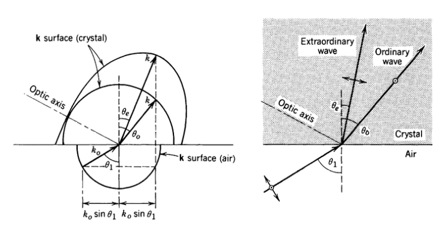
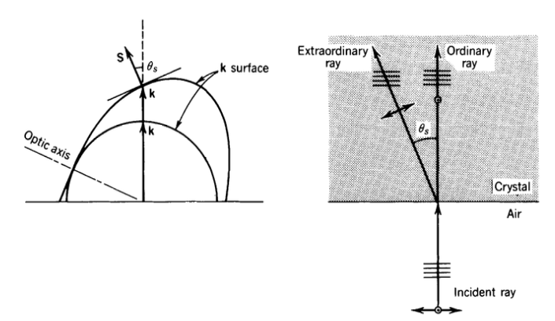
Biaxial Crystals: General Case
Definition and Properties
Biaxial crystals have three distinct principal refractive indices: \[n_x \neq n_y \neq n_z\]
The ordering convention is typically \(n_x < n_y < n_z\), where: - \(n_x\) = smallest refractive index (α-axis) - \(n_y\) = intermediate refractive index (β-axis) - \(n_z\) = largest refractive index (γ-axis)
Unlike uniaxial crystals with one optical axis, biaxial crystals have two optical axes.
Simplification of the Fresnel Equation
For biaxial crystals, consider propagation in the \(xz\)-plane (\(\phi = 0\)) at angle \(\theta\) to the \(z\)-axis: \[\mathbf{\hat{k}} = (\sin\theta, 0, \cos\theta)\]
The Fresnel equation becomes: \[\det\begin{pmatrix} n^2 - n_x^2 - \sin^2\theta & 0 & -\sin\theta\cos\theta \\ 0 & n^2 - n_y^2 & 0 \\ -\sin\theta\cos\theta & 0 & n^2 - n_z^2 - \cos^2\theta \end{pmatrix} = 0\]
This factors as: \[(n^2 - n_y^2)\left[(n^2 - n_x^2 - \sin^2\theta)(n^2 - n_z^2 - \cos^2\theta) - \sin^2\theta\cos^2\theta\right] = 0\]
Two Distinct Solutions
Solution 1 (\(\beta\)-ray): \(n^2 = n_y^2\)
This gives \(n = n_y\) independent of propagation direction \(\theta\) when propagating in the \(xz\)-plane.
Solution 2 (\(\alpha\gamma\)-ray): From the remaining factor: \[(n^2 - n_x^2 - \sin^2\theta)(n^2 - n_z^2 - \cos^2\theta) = \sin^2\theta\cos^2\theta\]
Expanding and solving this quadratic equation in \(n^2\): \[n^4 - n^2(n_x^2 + n_z^2 + 1) + n_x^2n_z^2 + n_x^2\cos^2\theta + n_z^2\sin^2\theta = 0\]
This yields the biaxial dispersion relation: \[\frac{1}{n^2} = \frac{\cos^2\theta}{n_x^2} + \frac{\sin^2\theta}{n_z^2}\]
for propagation in the \(xz\)-plane, where \(\theta\) is the angle between the wave vector k and the \(z\)-axis.
Key points:
- For \(\theta = 0°\) (propagation along \(z\)-axis): Light experiences two refractive indices (\(n_x\) and \(n_y\)) depending on its polarization direction
- For \(\theta = 90°\) (propagation along \(x\)-axis): Light experiences two refractive indices (\(n_y\) and \(n_z\)) depending on its polarization direction
- The optical axes do not align with the principal axes but instead lie in the \(xz\)-plane at specific angles where the two refractive indices become equal
- These optical axes occur at angles \(\pm V\) from the \(z\)-axis, where \(\cos^2 V = \frac{n_y^2 - n_x^2}{n_z^2 - n_x^2}\)
- Light propagating along these optical axes experiences no birefringence
Classification of Biaxial Crystals
Biaxial crystals have two optical axes located symmetrically about the intermediate refractive index axis. The angle between these optical axes is called the optic angle \(2V\).
The optical axes are located at angles \(\pm V\) from the \(z\)-axis, where: \[\cos^2 V = \frac{n_y^2 - n_x^2}{n_z^2 - n_x^2}\]
Optical sign classification:
- Positive biaxial: \(2V < 90°\) (small optic angle)
- Negative biaxial: \(2V > 90°\) (large optic angle)
Examples:
- Positive biaxial: Topaz, Mica (small angle between optical axes)
- Negative biaxial: Gypsum, Aragonite (large angle between optical axes)
The distinction between positive and negative biaxial crystals is important for optical applications and crystal identification.
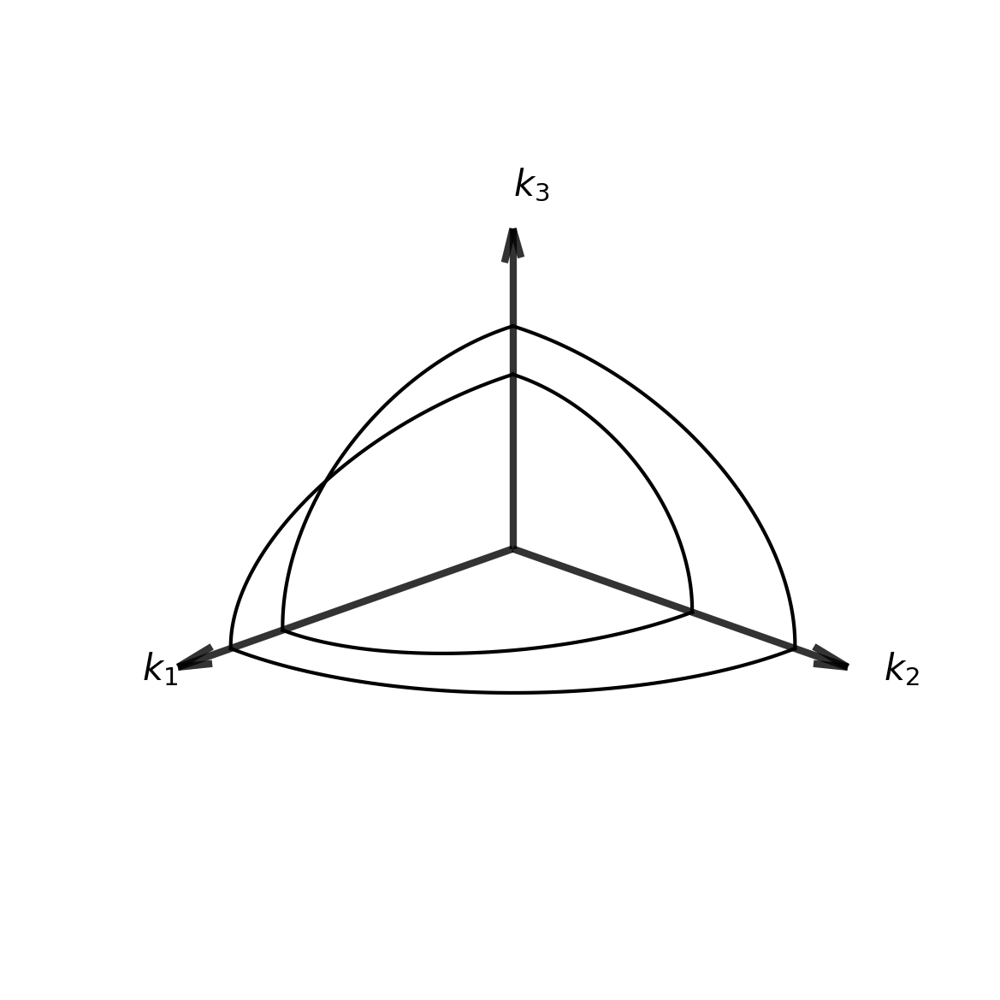
Applications
Wave Plates
Wave plates (retarders) are practical applications of the birefringent properties we’ve derived from the permittivity tensor. They are carefully cut crystals of controlled thickness that leverage the different refractive indices along principal axes to introduce precise phase differences between orthogonal polarization components.
A wave plate is typically oriented so that two of the principal axes of the permittivity tensor lie in the plane perpendicular to the direction of propagation. When viewed in this orientation, the axis with the lower refractive index is called the fast axis (where light travels faster), and the axis with the higher refractive index is the slow axis (where light travels slower). In uniaxial crystals: - When \(n_e < n_o\) (negative uniaxial): the fast axis corresponds to the extraordinary ray direction - When \(n_e > n_o\) (positive uniaxial): the fast axis corresponds to the ordinary ray direction
Input Wave Analysis: Consider a linearly polarized wave entering a wave plate whose principal axes (in the diagonalized permittivity tensor) are aligned with our coordinate system:
\[\mathbf{E}_{input} = E_0(\cos\alpha \hat{\mathbf{f}} + \sin\alpha \hat{\mathbf{s}})e^{i(kz-\omega t)}\]
In this expression, \(\hat{\mathbf{f}}\) and \(\hat{\mathbf{s}}\) represent unit vectors along the crystal’s fast and slow axes respectively (corresponding to two of the principal axes of the permittivity tensor), while \(\alpha\) denotes the angle between the input polarization and the fast axis, and \(E_0\) is the amplitude of the electric field.
Propagation Through Crystal: As the wave propagates through the crystal of thickness \(d\), each polarization component experiences a different refractive index based on the permittivity tensor elements. The component along the fast axis evolves as \(E_f = E_0\cos\alpha \cdot e^{i(k_f z - \omega t)}\) where \(k_f = \frac{2\pi n_f}{\lambda}\), while the slow axis component propagates as \(E_s = E_0\sin\alpha \cdot e^{i(k_s z - \omega t)}\) where \(k_s = \frac{2\pi n_s}{\lambda}\).
For a wave plate cut from a uniaxial crystal, these refractive indices correspond to the principal values we derived earlier: - \(n_f\) corresponds to one of the principal refractive indices (either \(n_e\) or \(n_o\), depending on crystal type) - \(n_s\) corresponds to the other principal refractive index
This differential propagation arising from the tensor nature of the permittivity is the fundamental mechanism that enables wave plates to manipulate polarization states.
After propagating through thickness \(d\), the wave becomes:
\[\mathbf{E}_{output} = E_0\cos\alpha \cdot e^{i(k_f d - \omega t)}\hat{\mathbf{f}} + E_0\sin\alpha \cdot e^{i(k_s d - \omega t)}\hat{\mathbf{s}}\]
Phase Difference: The crucial parameter is the phase difference (retardance) acquired between the two components:
\[\delta = (k_s - k_f)d = \frac{2\pi d}{\lambda}(n_s - n_f) = \frac{2\pi d}{\lambda}|n_e - n_o|\]
This retardance directly results from the anisotropic nature of the permittivity tensor that we examined earlier, which creates the different principal refractive indices for different polarization directions.
Design Considerations: It’s important to note that in real wave plates, the wave/ray vector distinction we discussed earlier has practical implications. The walk-off effect (where energy flow direction deviates from the wavefront normal) can affect beam displacement and the effective optical path, particularly in thicker crystals. Modern wave plate designs often use compound structures or specific crystal cuts to minimize these effects while maintaining the desired retardance.
Output Wave: Factoring out the common phase term:
\[\mathbf{E}_{output} = E_0 e^{i(k_f d - \omega t)}[\cos\alpha \hat{\mathbf{f}} + \sin\alpha \cdot e^{i\delta}\hat{\mathbf{s}}]\]
The relative phase shift \(e^{i\delta}\) between the components determines the output polarization state.
Quarter-Wave Plate
A quarter-wave plate is designed to introduce a phase difference of \(\delta = \pi/2\) between orthogonal polarization components, requiring a thickness of \(d = \frac{\lambda}{4|n_e - n_o|}\), where \(n_e\) and \(n_o\) are the extraordinary and ordinary refractive indices derived from the principal values of the permittivity tensor. This specific phase relationship enables the conversion between linear and circular polarization states.
Polarization transformation: For \(\alpha = 45°\) (input at 45° to crystal axes): \[\mathbf{E}_{output} = \frac{E_0}{\sqrt{2}} e^{i(k_f d - \omega t)}[\hat{\mathbf{f}} + e^{i\pi/2}\hat{\mathbf{s}}] = \frac{E_0}{\sqrt{2}} e^{i(k_f d - \omega t)}[\hat{\mathbf{f}} + i\hat{\mathbf{s}}]\]
This represents circularly polarized light since the two orthogonal components have equal amplitudes and are 90° out of phase.
For arbitrary input angle \(\alpha\), the output becomes: \[\mathbf{E}_{output} = E_0 e^{i(k_f d - \omega t)}[\cos\alpha \hat{\mathbf{f}} + i\sin\alpha \hat{\mathbf{s}}]\]
This produces elliptically polarized light with ellipticity determined by \(\alpha\). The quarter-wave plate thus provides complete control over the conversion from linear to circular or elliptical polarization, making it essential for applications requiring specific polarization states.
Half-Wave Plate
A half-wave plate introduces a phase difference of \(\delta = \pi\) between orthogonal components, achieved with a thickness of \(d = \frac{\lambda}{2|n_e - n_o|}\), where the difference between extraordinary and ordinary indices comes directly from the eigenvalues of the diagonalized permittivity tensor we derived earlier. This design creates a fundamentally different polarization transformation compared to the quarter-wave plate.
Polarization transformation: \[\mathbf{E}_{output} = E_0 e^{i(k_f d - \omega t)}[\cos\alpha \hat{\mathbf{f}} + \sin\alpha \cdot e^{i\pi}\hat{\mathbf{s}}] = E_0 e^{i(k_f d - \omega t)}[\cos\alpha \hat{\mathbf{f}} - \sin\alpha \hat{\mathbf{s}}]\]
The key result is that the output remains linearly polarized but is rotated by \(2\alpha\) relative to the input. If the input makes angle \(\alpha\) with the fast axis, the output makes angle \(-\alpha\) with the fast axis, resulting in a total rotation of \(2\alpha\). The \(\pi\) phase shift effectively reverses the slow-axis component, causing the polarization vector to flip across the fast axis, doubling the rotation angle.
These wave plates find extensive applications in modern photonics. Quarter-wave plates enable the conversion between linear and circular or elliptical polarization states, making them crucial for circular dichroism spectroscopy, optical communication systems, and laser applications. Half-wave plates provide precise polarization rotation and linear polarization direction control, essential for optical isolators, variable attenuators, and polarization-sensitive measurement systems.
Wave plates represent a practical engineering application of the mathematical framework we’ve developed for anisotropic media. The tensor nature of the permittivity, the resulting birefringence, and the propagation characteristics we’ve derived all come together in these components to enable precise manipulation of light’s polarization state.
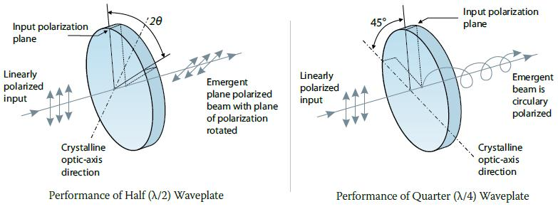
Phase Matching for Nonlinear Optics
Anisotropic crystals are not only critical for linear polarization control but also enable a phenomenon known as phase matching - essential for efficient nonlinear optical processes. Phase matching addresses a fundamental challenge in nonlinear optics: different wavelengths typically experience different refractive indices, causing them to propagate at different phase velocities.
The Phase Matching Challenge: In nonlinear processes like second harmonic generation (SHG), where two photons at frequency \(\omega\) combine to create one photon at frequency \(2\omega\), the efficiency depends critically on maintaining proper phase relationships between the interacting waves. The phase mismatch is quantified by:
\[\Delta k = k_{2\omega} - 2k_{\omega} = \frac{4\pi}{\lambda}[n(2\omega) - n(\omega)]\]
Without phase matching (\(\Delta k \neq 0\)), the generated second harmonic undergoes destructive interference over a characteristic distance called the coherence length:
\[L_c = \frac{\pi}{|\Delta k|} = \frac{\lambda}{4|n(2\omega) - n(\omega)|}\]
This severely limits conversion efficiency in typical materials where \(n(2\omega) > n(\omega)\) due to normal dispersion.
Birefringence-Based Solutions: The direction-dependent refractive indices of birefringent crystals offer an elegant solution. By aligning the polarization and propagation directions appropriately, we can achieve:
\[n_e(\omega,\theta) = n_o(2\omega)\]
This condition ensures \(\Delta k = 0\), allowing constructive interference of the generated wave throughout the entire crystal length. Two common approaches are:
Type I phase matching: Both fundamental photons have the same polarization (e.g., both ordinary), while the second harmonic has orthogonal polarization (extraordinary)
Type II phase matching: The two fundamental photons have orthogonal polarizations (one ordinary, one extraordinary), while the second harmonic has a third polarization state
The appropriate choice of crystal cut angle \(\theta\) relative to the optic axis creates the precise birefringence needed to offset normal dispersion, enabling efficient nonlinear conversion.
This critical application of anisotropic media fundamentally enables many nonlinear optical technologies including frequency doublers, optical parametric oscillators, and sum/difference frequency generation systems. We will explore nonlinear optics in greater detail in the next lecture.
Modern Applications of Anisotropic Materials
While the fundamental theories of anisotropic media were developed centuries ago, technological advances have enabled sophisticated applications that leverage these unique optical properties. This section explores cutting-edge implementations that rely on anisotropic materials.
Polarization-Maintaining Fibers
Conventional optical fibers suffer from random polarization fluctuations due to subtle stresses, temperature variations, and manufacturing imperfections. For applications requiring stable polarization states (such as interferometric sensors, coherent communications, and fiber optic gyroscopes), polarization-maintaining (PM) fibers provide a critical solution.
PM fibers introduce deliberate birefringence through structural anisotropy:
- PANDA fibers: Include stress-applying parts (SAPs) - cylindrical regions of borosilicate glass with higher thermal expansion coefficients than the surrounding cladding
- Bow-tie fibers: Employ asymmetric stress members resembling bow-ties in cross-section
- Elliptical-core fibers: Feature geometrically anisotropic cores
The induced birefringence creates distinct fast and slow axes with significantly different propagation constants, preventing polarization coupling. Typical birefringence values (\(\Delta n = |n_x - n_y|\)) range from \(10^{-4}\) to \(10^{-3}\), corresponding to beat lengths (\(L_B = \lambda/\Delta n\)) of a few millimeters.
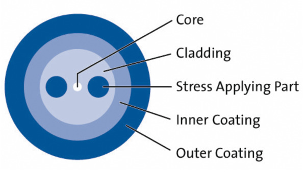
Modern PM fibers enable coherent optical communications with advanced modulation schemes, ultra-precise fiber optic sensing, and quantum key distribution systems.
Liquid Crystal Displays and Photonic Devices
Liquid crystals represent a fascinating class of anisotropic materials that combine crystalline ordering with fluid properties. Their optical anisotropy can be dynamically controlled through electrical fields, forming the basis for numerous display and photonic technologies.
Twisted Nematic Liquid Crystal Displays:
In the classic LCD configuration: 1. Light passes through a polarizer 2. Enters a twisted nematic liquid crystal layer (typically 90° twist) 3. The molecular director reorients under applied voltage 4. Changes in birefringence modulate light transmission through the analyzer
Modern implementations include: - In-Plane Switching (IPS): Electrodes on same substrate create horizontal fields - Vertical Alignment (VA): Molecules initially perpendicular to substrates - Fringe Field Switching (FFS): Improved viewing angles and transmission
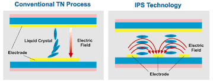
Beyond displays, tunable liquid crystal elements enable: - Adaptive optics - Beam steering devices - Tunable spectral filters - Spatial light modulators for holography and optical processing
Metamaterials with Engineered Anisotropy
Metamaterials - artificial structures with sub-wavelength features - can exhibit optical properties not found in natural materials, including precisely engineered anisotropy.
Key implementations include:
- Hyperbolic metamaterials: Extreme anisotropy where permittivity components have opposite signs along different axes, creating hyperbolic rather than elliptical dispersion relations. This enables:
- Super-resolution imaging beyond the diffraction limit
- Enhanced spontaneous emission
- Unusual wave propagation effects
- Metasurfaces: 2D arrays of subwavelength scatterers that impart spatially varying phase, amplitude, and polarization changes to incident light. Anisotropic metasurfaces enable:
- Flat optical components (metalenses)
- Polarization-dependent beam splitting
- Complex wavefront shaping
- Photonic topological insulators: Structures with topologically protected edge states that allow unidirectional light propagation immune to backscattering from defects and disorder
Quantum Information and Computing Applications
Anisotropic crystals play pivotal roles in quantum information processing:
- Entangled photon generation: Birefringent crystals enable spontaneous parametric down-conversion (SPDC) for creating polarization-entangled photon pairs. Beta barium borate (BBO), lithium niobate (LiNbO₃), and potassium titanyl phosphate (KTP) are commonly used.
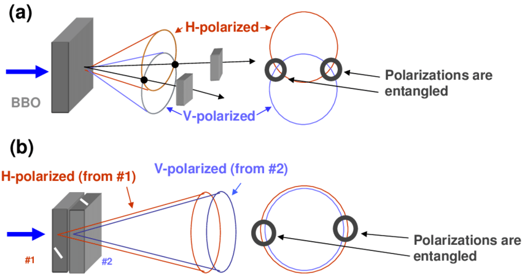
Quantum memory: Rare-earth-doped birefringent crystals (e.g., Pr:YSiO₅) serve as solid-state quantum memories by preserving photonic quantum states.
Integrated quantum photonics: Anisotropic thin films like lithium niobate on insulator (LNOI) enable on-chip quantum operations with unprecedented efficiency and scalability.
Biophotonics and Medical Applications
The interaction between polarized light and anisotropic biological structures provides powerful diagnostic capabilities:
- Mueller matrix polarimetry: Measures the complete polarization response of tissue, revealing structural information invisible to conventional imaging. Applications include:
- Early cancer detection
- Monitoring collagen remodeling in wounds
- Assessing retinal health
- Polarization-sensitive optical coherence tomography (PS-OCT): Combines interferometric imaging with polarization analysis to visualize birefringent structures like:
- Collagen fiber organization
- Myelin in neural tissue
- Muscle fiber orientation
- Glucose monitoring: Optically active (chiral) glucose molecules rotate polarized light proportionally to concentration, enabling non-invasive sensing approaches.
The rapidly evolving field of modern applications demonstrates that anisotropic optical materials remain at the forefront of photonic technology development, with impacts ranging from telecommunications to quantum computing and medical diagnostics.